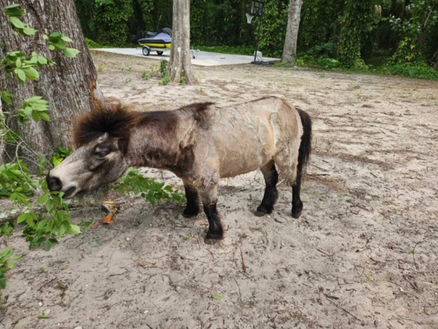

We offer personalized dog-walking services to keep your furry friends healthy and happy. Whether your pet prefers leisurely strolls or energetic jaunts, we customize each walk to suit their pace and personality. Our walks not only help your dog expend pent-up energy but also provide essential mental stimulation and social interaction. Trust us to give your dog the exercise and attention they deserve!
We understand that pets are most comfortable in their own homes. That's why Annie's Petsitting provides both occasional visits and overnight care. During visits, we feed, play, and attend to your pet's needs, ensuring they feel loved and cared for. For those who need extra attention or suffer from separation anxiety, our overnight service offers the reassurance of having a dedicated sitter by their side through the night, ensuring they are not alone and maintaining their regular routine.

Need help getting your pet to the vet, groomer, or a playdate? Look no further! Annie's Petsitting offers dependable transportation services for most animals. Our transport is equipped with secure carriers and safety features to ensure your pet’s safety and comfort on the road. Whether it’s a routine appointment or a special outing, we provide a stress-free travel experience for both you and your pet.
